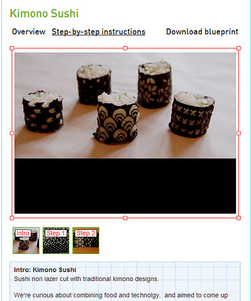

2013-08-02
「設計正在進行一場革命。科技不僅賦權給更多人有能力創造及普及設計，專業人士與熱衷者也能使用它去和世界分享他們的作品。開放設計帶來的改變發生在所有事情上，從傢俱，一直到設計者如何維生…..」
第一場「開放設計競賽」(Open Design Contest)始於2009年，當時只是實驗性質的，被稱為「無限設計競賽」，希望透過競賽，相互交流開放設計背後的想法，同時也凸顯今日的科技工具有辦法將真正的物品數位化。由於此競賽獲得好評，便持續在各地舉辦，吸引更多人對於「開放設計」產生興趣。
透過這個全球平台，世界各地的參與者不僅將自己的設計產品與他人分享，也讓他人能改造自己的作品，各自因應在地文化因素或個人品味重新設計產品，並能從之前的競賽成果中激發出更好、更進一步的設計，善用這麼龐大且來自各地的設計資產與藍圖，從中看到更多從未想過的點子，產生更特別的成品。
平台上的數位設計分成四種類型—形式(form)、食物(food)、時尚(fashion)、聚變(fusion)。「形式」指的是任何可實際應用的物件，像是燈具、椅子等傢俱，「食物」很像是創新食譜分享，「時尚」指的是書包版型、衣服設計等，「聚變」則是運用個人品味將其他三種類型的設計加以改造。
下圖的兩張椅子分別屬於形式和聚變的類別，兩者分開看各是一個值得實踐的產品設計，合在一起看時，則會看出創意發酵產生的效果。

要在此平台發表設計，除了針對設計產品的目的、功能說明之外，還需要將製作的步驟拍照，寫成步驟指示，並提供設計藍圖，供有興趣的人下載使用。
另外，此平台發表的每個設計基本上都是以創用CC「姓名標示─非商業性─相同方式分享」授權，只要能尊重原本的作者、不會造成原作者的商業損失，且願意採取同樣的授權方式分享，那這些設計都非常歡迎被使用和傳播。由每個設計的頁面下方都有連結可以快速得到使用手冊，或是進入競賽改造此產品，也可以看出對於「再次使用」和「改造」的歡迎之意。
有些設計者或許對於自己的設計成品在分享程度上有不同想法，那其實是有授權方式的調整空間的，此平台就根據三種目的以案例說明不同的創用CC可以如何運用。如果只是單純想要透過分享來讓更多人知道自己的作品，可以選擇「姓名標示─非商業性─禁止改作」授權；如果是想要透過共同合作來創新，或是想要藉由分享來增進產品，那就適合採取平台原本預設的「姓名標示─非商業性─相同方式分享」授權。
Open Design Contest由荷蘭的wagg society、Premsela和Creative Commons共同發起，在wagg society上可以看到更多的開放設計計畫，而不只是設計的成品。由於秉持著「開放」的理念，他們將「開放設計競賽」進行的經驗匯集成書，從2011年起開始逐步釋放，現在在網路上可以免費看到完整的公開內容，且採取的是「姓名標示─相同方式分享」授權，歡迎更多人來認識這個競賽平台和開放設計的理念。